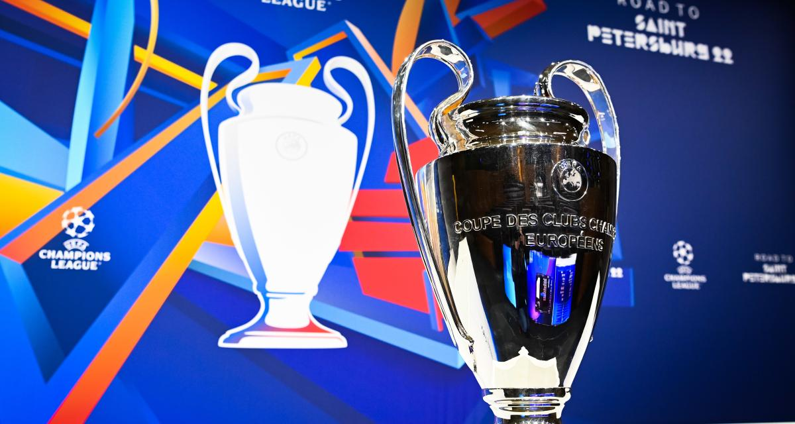
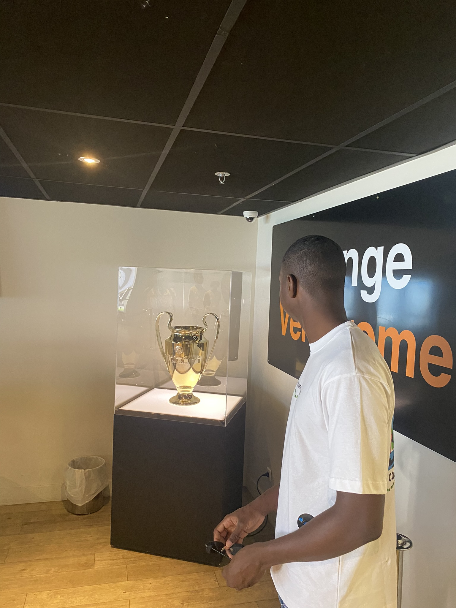
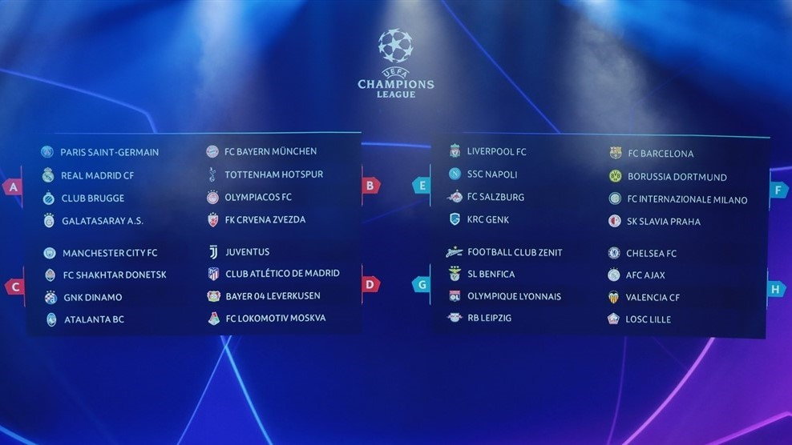
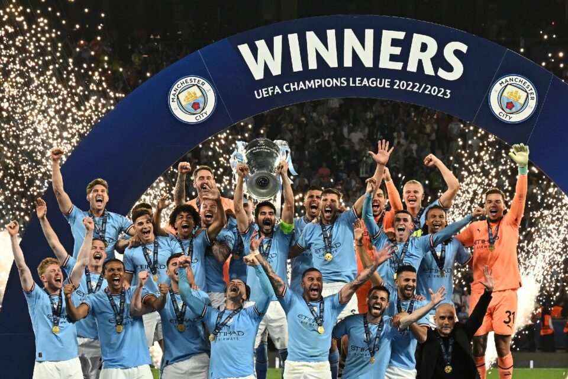
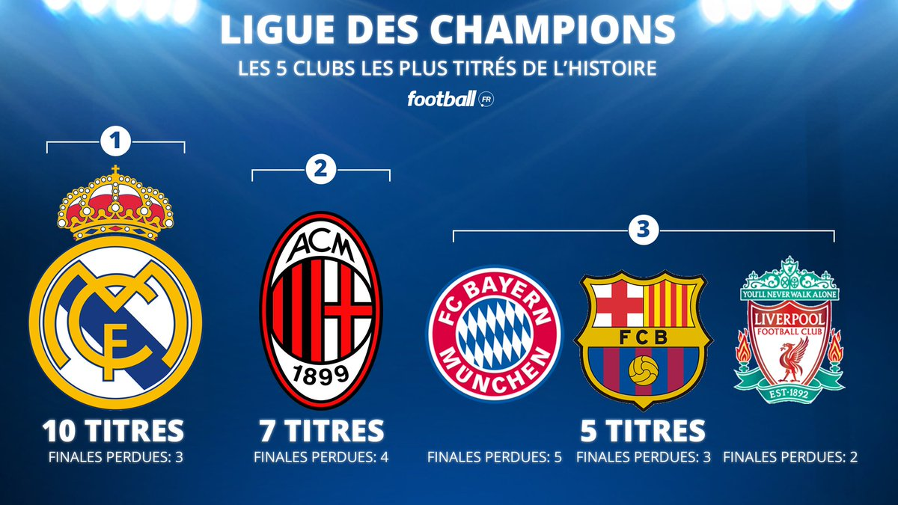

Histoire
La Ligue des champions de l'UEFA (UEFA Champions League), parfois abrégée en C1 et anciennement dénommée Coupe des clubs champions européens (de sa création en 1955 jusqu'en 1992), est une compétition annuelle de football organisée par l'Union des associations européennes de football (UEFA) et regroupant les meilleurs clubs du continent européen1. C'est la compétition interclubs de football la plus prestigieuse d'Europe devant la Ligue Europa.
Le vainqueur de la compétition est automatiquement qualifié pour l'édition suivante. Il participe également à la Supercoupe de l'UEFA ainsi qu'à la Coupe du monde des clubs de la FIFA.
Le Real Madrid est le club le plus titré dans l'histoire de la compétition avec quatorze victoires
Voici la Coupe


Le tirage
Le tirage au sort concerne les 16 équipes qualifiées en provenance de la phase de groupes de l'UEFA Champions League. Les vainqueurs de groupe sont têtes de série et les deuxièmes de groupe ne sont pas des têtes de série. Les équipes têtes de série sont opposées à des équipes non-têtes de série

Le dernier vainqueur de la competition
Manchester City, le club anglais est le dernier vainqueur de la competition au terme d'une finale palpitante a Istanbul contre l'Inter de Milan . Le match s'est terminer 1-0 avec un but de Rodri

Quelque exemples de clubs Europeen ayant remporter la coupe :

Retour en haut